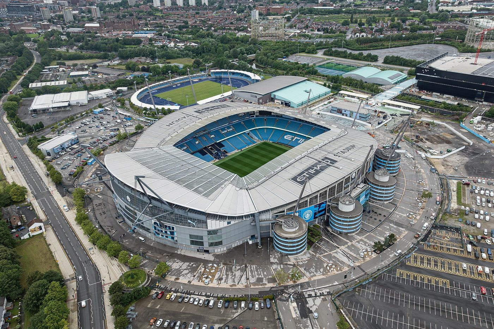

Last issue, we asked for a dull 0–0 at Anfield. We did not get one. Since then there have been nine goals in Austria, six at Villa Park, a record-breaking night of Champions League football and one result that every United fan will enjoy very much. Pour the cereal; here's the week.
Goalless and tense for an hour, then Ryan Gravenberch was sent off for a second yellow card and City scored three times in 13 minutes. Liverpool's first defeat of the season. City, booed by the home fans before kick-off, went back to the top.
Frank Lampard's newly promoted side had won once all season. Then they hammered Newcastle on Monday night. Nobody saw that coming.
Oliver Glasner's first trip back to Selhurst Park as Forest coach started perfectly, with a goal after three minutes, and then went badly wrong for him. His old club turned it round.
Four second-half goals, and Hull are still unbeaten at home since coming back up. (United fans will remember: Hull beat us there on the opening day.)
Let's deal with Anfield honestly. We would have preferred a draw. Instead City won 3–0, and they now have six wins out of six and an 18-point total at the top of the table, which is annoying, especially as they're also the club found guilty of 114 charges a few weeks ago. But Liverpool losing at home is not the worst thing that could happen, and as the old saying goes, it's not how you start, it's how you finish. City also found out what happens when you meet a really good team three days later. Keep reading.

The headline of Champions League week came from Manchester. Three days after winning at Anfield, City hosted Paris Saint-Germain, and PSG dismantled them. Désiré Doué scored after 13 minutes, Ousmane Dembélé headed in two minutes later and Vitinha made it 3–0 on 32 minutes. Haaland pulled one back with a header, Maghnes Akliouche restored the three-goal lead, and Haaland's second came too late to matter. City 2, PSG 4. We'll just leave that there.
Three down after 32 minutes at home. PSG made the Premier League leaders look very ordinary indeed.
Liverpool led 6–1 in Austria, then let in two goals in three minutes. Bradley Barcola scored a hat-trick, which, we admit, was quite good.
Villa are struggling in the league (16th) but look like a different team in Europe: two wins out of two.
Goalless for an hour, then three goals in eight minutes. Arsenal have won both games without conceding.
Norwegian side Viking led 2–0, Harry Kane scored twice to help Bayern lead 3–2, Michael Olise was sent off, and Viking equalised in the 90th minute.
Belgium's Club Brugge won at the San Siro, with a hat-trick from Nicolò Tresoldi. Italian giants Inter have lost both games so far.
Elsewhere, Barcelona won 4–1 in Istanbul and Real Madrid pulled off an exhilarating comeback in Rome (both on page 24), and Norway's Bodø/Glimt beat Borussia Dortmund 1–0. United's 2–0 defeat in Madrid is on page 4. United now have three points, the same as Liverpool… no, wait, Liverpool have six. Moving on.
Every team that loses a big game has a moment when it could capitulate, give up and let the score get worse. LASK were 6–1 down to Liverpool in front of their own fans and could easily have collapsed. Instead they scored twice more and finished the night with their supporters singing. Losing 6–3 isn't fun, but going down fighting is something to be proud of.
Brentford, unbeaten all season, keep it going against Liverpool. Ipswich become the second team this week to embarrass Manchester City. And United win at Elland Road. Is that too much to ask? (Yes. Yes, it probably is.)
The full Premier League table is on page 34.